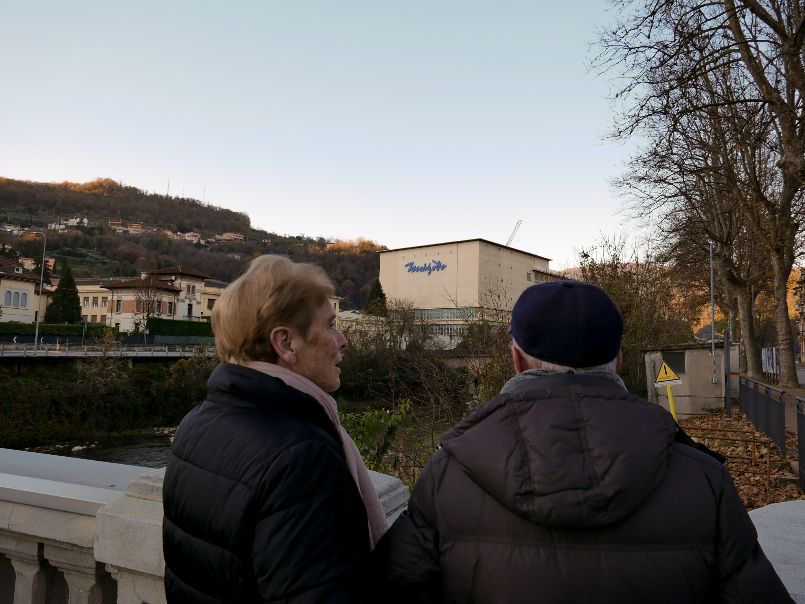
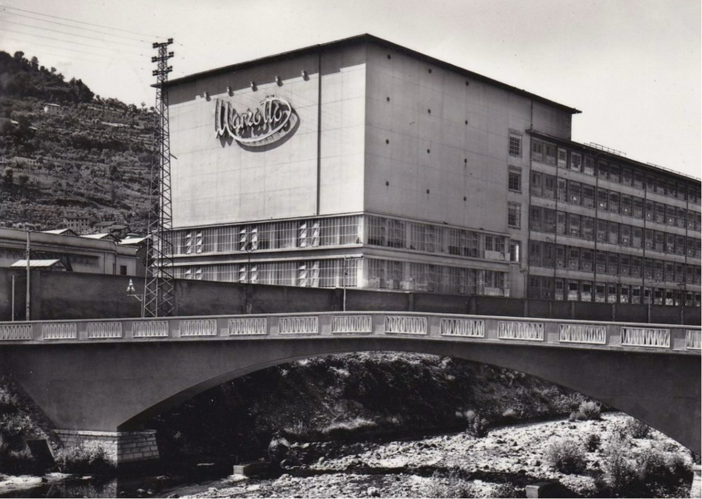
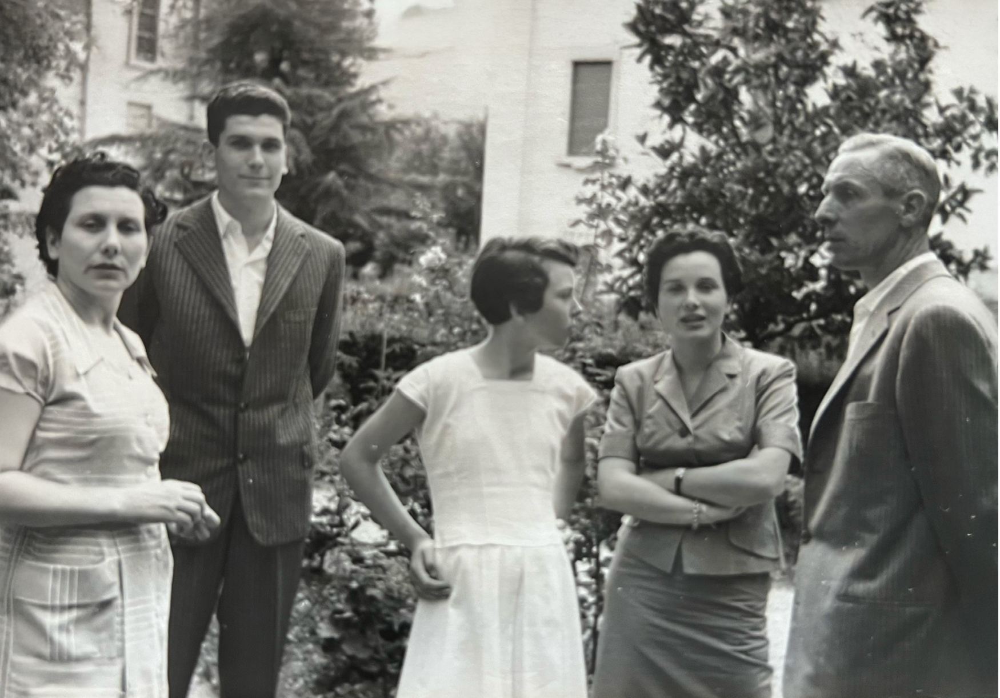

Progetti
Memoria
Un progetto audiovisivo che racconta il rapporto tra memoria, identità e tempo.
Memoria è un cortometraggio/documentario costruito attraverso immagini, silenzi e dettagli quotidiani. Il progetto esplora il modo in cui i ricordi influenzano la percezione delle persone, dei luoghi e delle emozioni, lasciando spazio a una narrazione intima e sospesa.
La direzione visiva si sviluppa attraverso un’estetica essenziale e atmosferica, fatta di luci morbide, inquadrature statiche e momenti osservativi. Ogni scena è pensata per trasmettere una sensazione di vicinanza e autenticità, mantenendo un equilibrio tra documentazione e racconto personale.
Ringrazio i miei nonni per aver condiviso con me i loro preziosi ricordi.
Guarda il cortometraggio
Memoria


